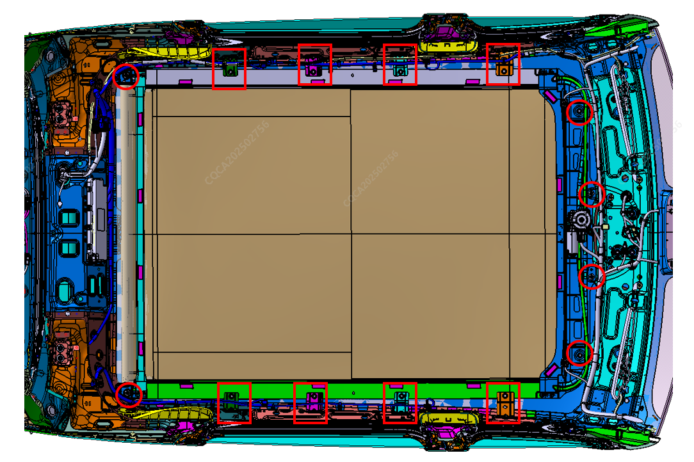

1. Демонтировать обивку потолка, боковые шторки безопасности, ручки и кронштейны ручек и другие сопутствующие детали;
2. С помощью отвертки выкрутить точки крепления солнцезащитной шторки в местах, обведенных кружками и квадратами на рисунке: сначала демонтировать левый и правый монтажные кронштейны в квадратах, соединяющие шторку с боковиной, затем демонтировать точки крепления передней и задней рамок в кружках; когда на передней и задней рамках останется по 1-2 точки крепления, 1-2 специалиста должны поддерживать шторку изнутри; после демонтажа всех точек крепления извлечь шторку через проем двери задка, момент затяжки: 6 ± 1 N.m

Установка выполняется в порядке, обратном снятию.
Внимание: после завершения установки необходимо выполнить операцию инициализации солнцезащитной шторки потолка.